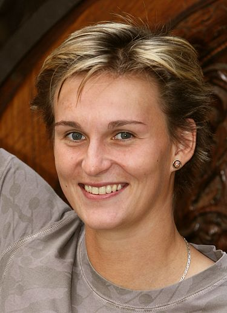
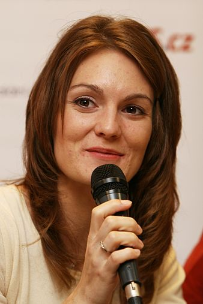
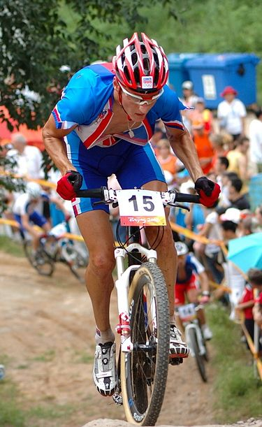
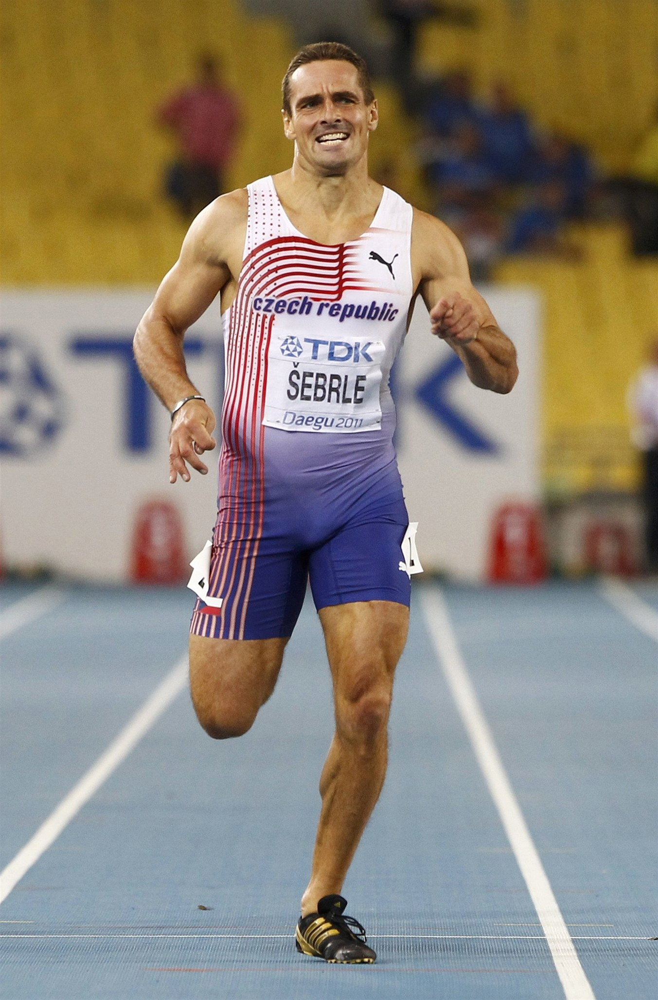
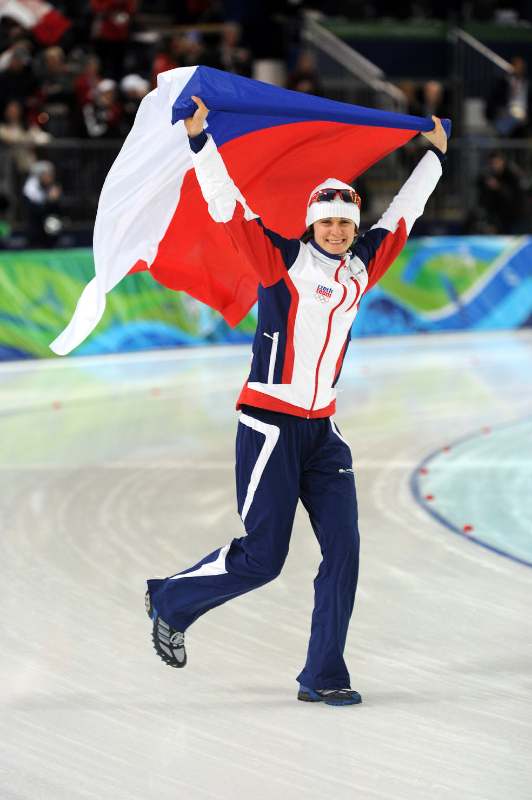
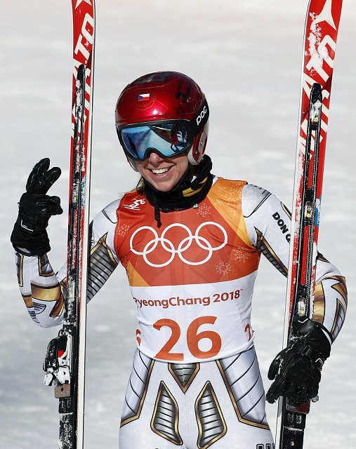
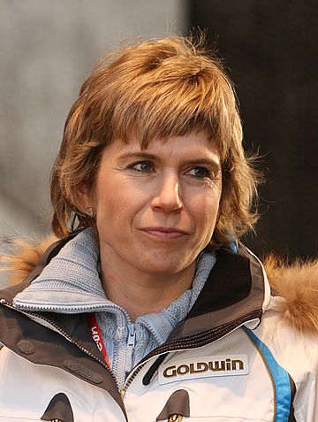
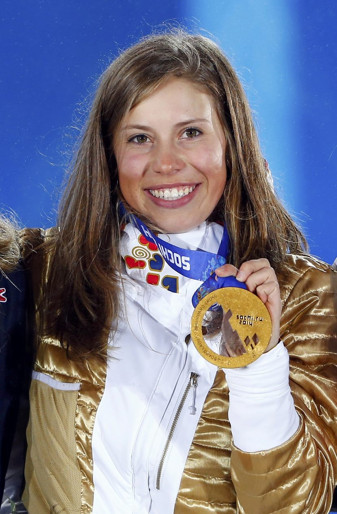

-
Barbora Špotáková
Datum narození 30. června 1981 Místo narození Jablonec nad Nisou Olympijské hry LOH Disciplína hod oštěpem Barbora Špotáková je česká atletka, závodící v hodu oštěpem, dvojnásobná olympijská vítězka z LOH 2008 v Pekingu a LOH 2012 v Londýně. Od 13. září 2008 je také držitelkou světového rekordu v hodu oštěpem v ženské kategorii s výkonem 72,28 metru
-
Kateřina Emmons
Datum narození 17. listopadu 1983 Místo narození Plzeň Olympijské hry LOH Disciplína střelba Kateřina Emmons, rozená Kůrková, je bývalá česká sportovní střelkyně ze vzduchovky a malorážky Je trojnásobnou olympijskou medailistkou, mj. vítězkou na olympijských hrách 2008 v Pekingu, vedle toho také mistryní světa a Evropy.
-
Jaroslav Kulhavý
Datum narození 8. ledna 1985 Místo narození Ústí nad Orlicí Olympijské hry LOH Disciplína cyklistika Jaroslav Kulhavý je český cyklista jezdící na horském kole (disciplína cross country). Konkrétně jde o mistra světa z roku 2011 a olympijského vítěze z Londýna z roku 2012. V roce 2011 zvítězil v celkovém hodnocení světového poháru.
-
Roman Šebrle
Datum narození 26. listopadu 1974 Místo narození Lanškroun Olympijské hry LOH Disciplína desetiboj Roman Šebrle je bývalý český atletický vícebojař a olympijský vítěz v desetiboji z roku 2004. Jako první překonal v desetiboji bájnou hranici 9000 bodů. Podle aktuálních bodovacích tabulek výkonem 9026 bodů vytvořil 26. a 27. května 2001 v Götzisu světový rekord.
{kind=link}
{kind=link}
{kind=link}
{kind=link}
-
Martina Sáblíková
Datum narození 27. května 1987 Místo narození Nové Město na Moravě Olympijské hry ZOH Disciplína rychlobruslení Martina Sáblíková je česká rychlobruslařka specializující se na dlouhé tratě 3000 a 5000 m. Je trojnásobnou olympijskou vítězkou, mnohonásobnou mistryní světa a Evropy, držitelkou několika světových rekordů. Vyhrála také mistrovství České republiky v rychlobruslení.
-
Ester Ledecká
Datum narození 23. března 1995 Místo narození Praha Olympijské hry ZOH Disciplína alpské lyžování Ester Ledecká je česká snowboardistka a alpská lyžařka. Na Zimních olympijských hrách 2018 v Pchjongčchangu získala dvě zlaté medaile. Ve snowboardingu je také mistryní světa z paralelního a obřího paralelního slalomu. V letech 2016 a 2017 vyhrála anketu Král bílé stopy.
-
Kateřina Neumannová
Datum narození 15. února 1973 Místo narození Písek Olympijské hry ZOH Disciplína běh na lyžích Kateřina Neumannová je bývalá česká běžkyně na lyžích a cyklistka, olympijská vítězka a mistryně světa v běhu na lyžích. V současnosti působí na Ministerstvu obrany jako referentka, kde má na starost koncepci armádního sportu a reprezentace.
-
Eva Samková
Datum narození 28. dubna 1993 Místo narození Vrchlabí Olympijské hry ZOH Disciplína snowboarding Eva Samková je česká snowboardistka závodící ve snowboardcrossu. Je olympijskou vítězkou ze ZOH 2014 v Soči a bronzovou medailistkou z následujících ZOH v Pchjongčchangu. Na X Games 2014 vybojovala druhé místo, stejné umístění má na kontě i z roku 2016.
{kind=link}
{kind=link}
{kind=link}
{kind=link}